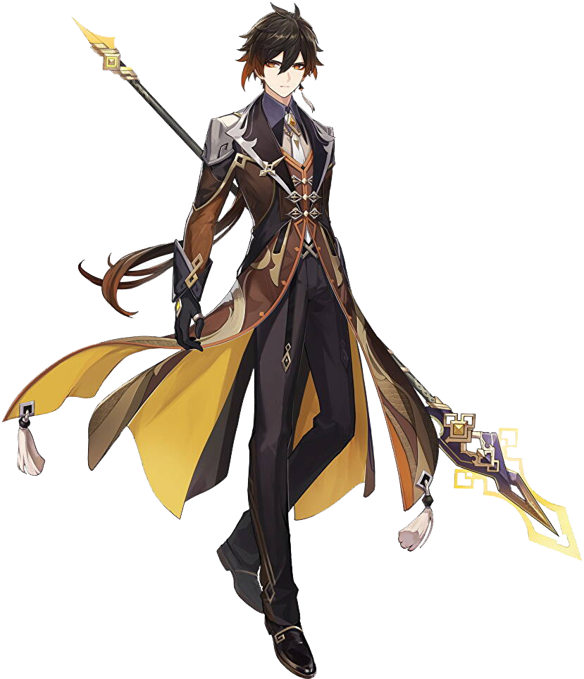

MORAX
Morax adalah salah satu karakter dalam game asal China, Genshin Impact. Ia biasanya ditemui di kapal saat Geo Archon, Morax, yang telah memutuskan untuk melakukan perubahan di dunia.Setelah melepaskan Gnosisnya, ia pensiun dari posisinya sebagai Archon dan kembali ke identitas aslinya sebagai Adeptus, meskipun masih berkedok sebagai manusia. Biasanya ia tampil sebagai pria jangkung dengan kulit putih yang pucat. Ia memakai eyeliner merah di kelopak bawah matanya dan rambut yang dikuncir ke belakang.
Demo Karakter - "Zhongli: Pendengar Kisah" | Genshin Impact
| Nama Asli | Zhongli |
| Rarity | 
|
| Negara | Liyue |
| Archon | Geo |
| Senjata | Polearm |